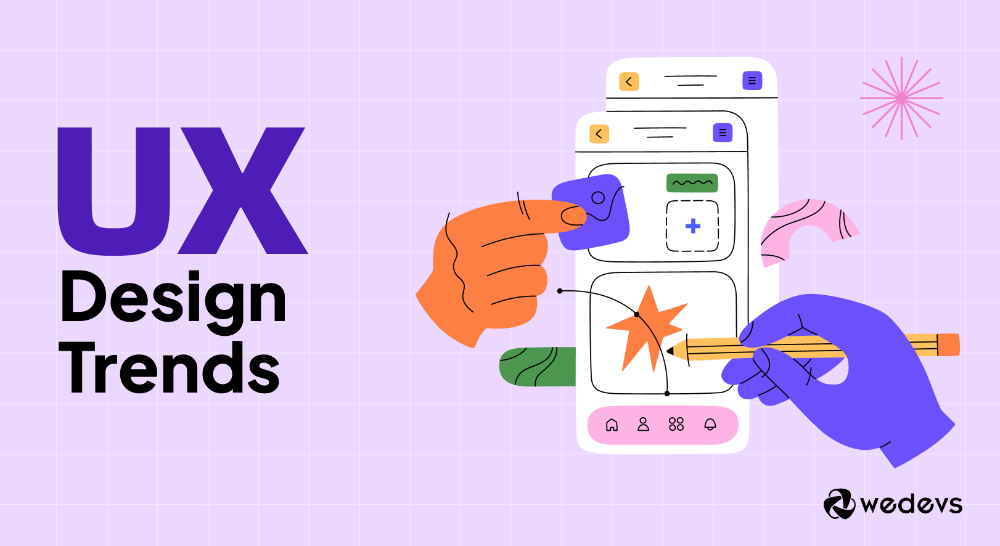

Designing User-Centered Digital Experiences: My Journey as a UI/UX Designer
Oct 8, 2024
Dive into the latest trends, best practices, and expert tips to elevate your design skills and create user-centered experiences
Read More

UX Design Trends for 2024: Shaping the Future of Digital Experiences
Oct 17, 2024
Stay ahead of the curve with our comprehensive overview of the most impactful UX design trends for 2024. From AI-driven personalization to immersive 3D interfaces, discover how these innovations are shaping the future of digital experiences.
Read More